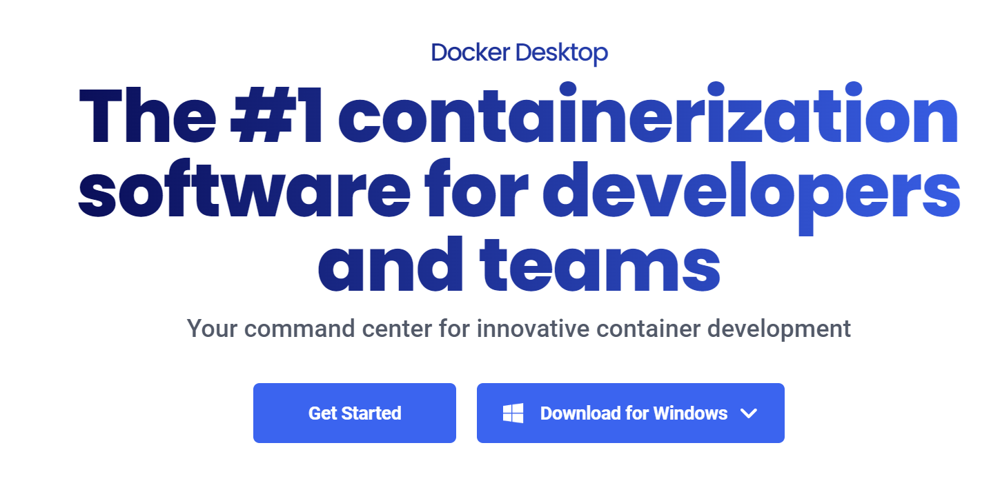
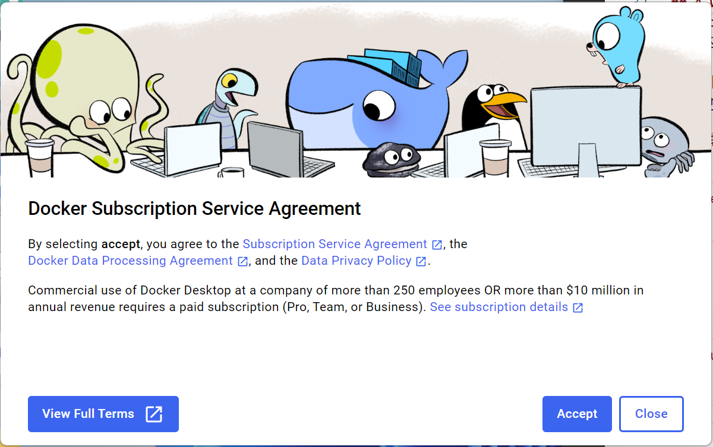

Last change: 2024-08-13 18:49:53
Win11下Docker的安装#
Reference#
1 Docker 是什么#
Docker 是一个应用打包、分发、部署的工具.
打包：就是把你软件运行所需的依赖、第三方库、软件打包到一起，变成一个安装包.
分发：你可以把你打包好的“安装包”上传到一个镜像仓库，其他人可以非常方便的获取和安装.
部署：拿着“安装包”就可以一个命令运行起来你的应用，自动模拟出一摸一样的运行环境，不管是在 Windows/Mac/Linux.
2 Docker 部署的优势#
常规应用开发部署方式：自己在 Windows 上开发、测试 –> 到 Linux 服务器配置运行环境部署.
问题：我机器上跑都没问题，怎么到服务器就各种问题了.
用 Docker 开发部署流程：自己在 Windows 上开发、测试 –> 打包为 Docker 镜像（可以理解为软件安装包） –> 各种服务器上只需要一个命令部署好.
优点：确保了不同机器上跑都是一致的运行环境，不会出现我机器上跑正常，你机器跑就有问题的情况.
3 重要概念：镜像、容器#
镜像：可以理解为软件安装包，可以方便的进行传播和安装.
容器：软件安装后的状态，每个软件运行环境都是独立的、隔离的，称之为容器.
4 Win下docker-desktop安装#
-
 安装
Microsoft Hyper-V参考：https://blog.csdn.net/lihuiyun184291/article/details/123224733
由于我的电脑系统是家庭版本，所以需要先安装
Microsoft Hyper-V将如下代码添加到记事本中，并另存为Hyper-V.cmd文件。代码如下：
pushd "%~dp0" dir /b %SystemRoot%\servicing\Packages\*Hyper-V*.mum >hyper-v.txt for /f %%i in ('findstr /i . hyper-v.txt 2^>nul') do dism /online /norestart /add-package:"%SystemRoot%\servicing\Packages\%%i" del hyper-v.txt Dism /online /enable-feature /featurename:Microsoft-Hyper-V-All /LimitAccess /ALL
右键点击【Hyper-V.cmd】文件图标，在右键菜单中点击：以管理员身份运行.
程序跑好后，输入
Y，电脑自动重启，进行配置更新.
启动
Microsoft Hyper-V在电脑上打开“控制面板”->“程序”-> “启动或关闭Windows功能”，勾选以下内容

安装docker
双击
Docker Desktop Installer.exe点击
OK
点击
Close and log out
点击
Accept 默认勾选，点击
Finish
配置镜像加速器

{kind=link}
{kind=link}
{kind=link}
{kind=link}
{kind=link}
5 Ubuntu下docker安装#
卸载老版本
在安装Docker Engine之前，您需要卸载所有冲突的包. ubuntu在APT中提供了Docker软件包的非官方发行版，您必须卸载这些软件包才能安装正式版本的Docker Engine.
执行如下命令卸载所有冲突的包:
for pkg in docker.io docker-doc docker-compose docker-compose-v2 podman-docker containerd runc; do sudo apt-get remove $pkg; done
使用apt存储库进行安装
在宿主机上首次安装Docker Engine之前，需要设置Docker存储库。之后，您可以从存储库安装和更新Docker.
安装配置依赖
sudo apt-get update sudo apt-get install ca-certificates curl sudo install -m 0755 -d /etc/apt/keyrings
下载密钥文件gpg，并将其另存为
/etc/apt/keyrings/docker.asc，并配置文件权限sudo curl -fsSL http://mirrors.aliyun.com/docker-ce/linux/ubuntu/gpg -o /etc/apt/keyrings/docker.asc sudo chmod a+r /etc/apt/keyrings/docker.asc
将仓库添加到Apt源码中:
echo \ "deb [arch=$(dpkg --print-architecture) signed-by=/etc/apt/keyrings/docker.asc] http://mirrors.aliyun.com/docker-ce/linux/ubuntu \ $(. /etc/os-release && echo "$VERSION_CODENAME") stable" | \ sudo tee /etc/apt/sources.list.d/docker.list > /dev/null sudo apt-get update
安装docker
sudo apt-get install docker-ce docker-ce-cli containerd.io docker-buildx-plugin docker-compose docker-compose-plugin
配置代理
参考：https://www.cnblogs.com/Chary/p/18096678
docker pull 是在docker hub上面下载的，服务器在国外，所以需要配置代理加速拉取
修改conf文件
sudo mkdir -p /etc/systemd/system/docker.service.d sudo touch /etc/systemd/system/docker.service.d/proxy.conf vim /etc/systemd/system/docker.service.d/proxy.conf
proxy.conf添加以下内容：
[Service] Environment="HTTP_PROXY=http://proxy.example.com:8080/" Environment="HTTPS_PROXY=http://proxy.example.com:8080/" Environment="NO_PROXY=localhost,127.0.0.1,proxy.example.com"
proxy.example.com是ipv4地址保存退出
重新加载服务
systemctl daemon-reload重新启动Docker
systemctl restart docker
换源
如果配置代理不生效就换源
编辑镜像源文件
vim /etc/docker/daemon.json修改daemon.json
sudo tee /etc/docker/daemon.json <<-'EOF' { "registry-mirrors": ["https://qjdr63rg.mirror.aliyuncs.com"] } EOF保存退出
重新加载服务
systemctl daemon-reload重新启动Docker
systemctl restart docker
查看docker镜像源是否改变
docker info